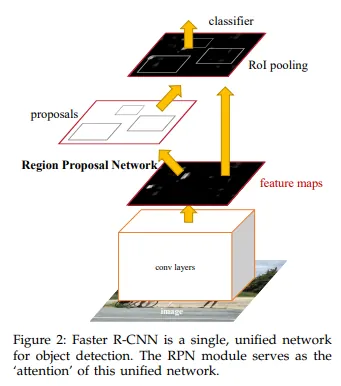
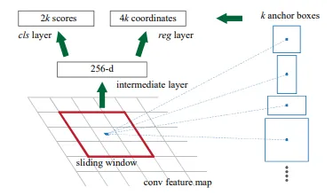
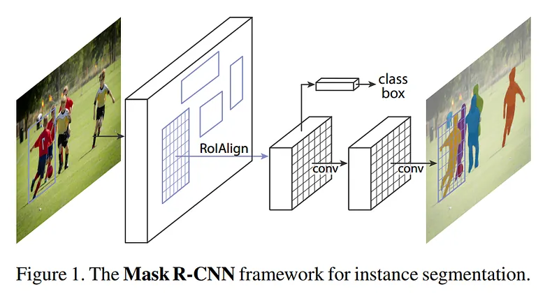
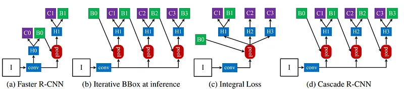

Timeline of R-CNNs: proposals, shared features, RPNs, masks, cascades
Timeline of R-CNNs
A source-grounded learning guide for the R-CNN family: how the pipeline moves from per-proposal CNN passes to shared convolutional features, learned proposal networks, mask prediction, and cascaded high-IoU detection.
Papers Explained Review 03 - RCNNsComputer Vision
Overview
The core arc
The wiki presents the R-CNN lineage as a sequence of fixes to the same detection pipeline. R-CNN starts with category-independent region proposals, extracts CNN features per proposal, and classifies regions with class-specific SVMs. Fast R-CNN keeps external proposals but shares image-level convolutional computation. Faster R-CNN learns the proposal step with an RPN. Mask R-CNN adds a mask output per RoI. Cascade R-CNN refines boxes through progressively more selective detector stages.
Question this artifact answers
What changed at each point in the R-CNN timeline, and what bottleneck or capability did that change target?
Mental model: Treat the family as one detector being progressively reorganized. First the CNN is attached to each proposed crop, then the CNN is shared, then proposals are learned, then masks and higher-quality cascades are added on top.
Why It Matters
The wiki frames R-CNN evolution around speed, training complexity, proposal quality, and task coverage. Fast R-CNN directly addresses the original R-CNN cost of forwarding every object proposal through a ConvNet. Faster R-CNN makes proposal generation part of a unified network. Mask R-CNN keeps the two-stage structure but adds instance segmentation. Cascade R-CNN targets high-quality detection by progressively refining hypotheses at higher IoU thresholds.
Key insight: The wiki does not present these as unrelated architectures. Each page describes an inherited structure plus one pressure point: duplicated computation, external proposals, missing masks, or low-quality hypotheses.
Interactive Timeline
Select a milestone to see what changed, what stayed, and which wiki page grounds the claim.
R-CNN: make object detection region-based
R-CNN uses category-independent region proposals, extracts fixed-length CNN features from each region, then scores those features with class-specific linear SVMs.
Input imageRaw image enters detector
Region proposalsCategory-independent boxes
Warp each regionNormalize proposal crop
CNN featuresForward pass per proposal
SVM + NMSClass scores and filtered boxes
Mermaid-style flow, rendered with local HTML/CSS for offline use.
The candidate boxes that define where the detector will look. R-CNN uses category-independent proposals; Faster R-CNN learns proposals through the RPN.
RoI pooling
Fast R-CNN converts features inside any valid RoI into a fixed spatial extent such as 7 x 7, allowing shared image features to feed fixed-size classifier heads.
Anchors
Faster R-CNN parameterizes proposals relative to reference boxes centered at each sliding-window location, with scales and aspect ratios.
IoU thresholds
Cascade R-CNN uses progressively higher IoU thresholds across stages so later detectors become more selective against close false positives.
Source-labeled paraphrase from Papers Explained 16 - Faster RCNN
Faster R-CNN is described as two modules: a fully convolutional region proposal network and a Fast R-CNN detector that uses those proposed regions.
Fast R-CNN shares convolutional features and uses RoI pooling per proposal. Source: Papers Explained 15 - Fast RCNN.
Faster R-CNN

Faster R-CNN adds the RPN as the proposal module in a unified detector. Source: Papers Explained 16 - Faster RCNN.
Anchors

Anchors are reference boxes at sliding-window locations. Source: Papers Explained 16 - Faster RCNN.
Mask R-CNN

Mask R-CNN adds a mask branch alongside class and box outputs. Source: Papers Explained 17 - Mask RCNN.
Cascade R-CNN

Cascade R-CNN stacks stages so each stage refines boxes for the next. Source: Papers Explained 77 - Cascade RCNN.
Comparison By Pressure Point
R-CNN to Fast R-CNN
The problem was duplicated computation and expensive multi-stage training. Fast R-CNN processes the whole image to produce a shared conv feature map, then applies RoI pooling for each proposal.
Fast R-CNN to Faster R-CNN
The proposal mechanism becomes a learned module. The RPN slides over shared feature maps and predicts objectness scores plus box coordinates for anchors.
Faster R-CNN to Mask R-CNN
The two-stage detector remains, but the second stage gets a third output: a binary mask for each RoI, trained with the mask loss alongside classification and box losses.
Faster/Mask R-CNN to Cascade R-CNN
Cascade R-CNN focuses on high-quality detection by training detector stages with increasing IoU thresholds and applying the cascade during inference to refine hypotheses.
Quiz
Pick an answer to reveal the explanation. Progress is stored locally in this browser.
Q1 - What made original R-CNN slow?
Which bottleneck is explicitly named in the wiki?
It used too few region proposals.
It performed a ConvNet forward pass for each object proposal.
It did not use class-specific SVMs.
Answer: Fast R-CNN's wiki page says R-CNN is slow because it performs a ConvNet forward pass for each object proposal, without sharing computation.
Q2 - What did Fast R-CNN share?
What does the wiki say Fast R-CNN computes before pooling per proposal?
A convolutional feature map for the whole image.
A separate CNN feature vector for every warped proposal.
A binary mask for each RoI.
Answer: Papers Explained 15 - Fast RCNN says the network first processes the whole image with convolutional and pooling layers to produce a conv feature map.
Q3 - What is the RPN for?
In Faster R-CNN, what is the first module responsible for?
Replacing bounding-box regression with masks.
Running non-maximum suppression independently for each class.
Proposing regions with a deep fully convolutional network.
Answer: Papers Explained 16 - Faster RCNN describes two modules: a fully convolutional network that proposes regions and a Fast R-CNN detector.
Q4 - What does Mask R-CNN add?
Which output is added in parallel to class and box prediction?
A binary mask for each RoI.
A set of class-specific SVMs.
A selective-search proposal list.
Answer: Papers Explained 17 - Mask RCNN says Mask R-CNN outputs a binary mask for each RoI in parallel with class and box offset prediction.
Q5 - Why cascade detectors?
What is Cascade R-CNN's key move according to the wiki?
Remove region-wise feature extraction entirely.
Use multiple detector stages trained with progressively higher IoU thresholds.
Train one detector only at the lowest IoU threshold.
Answer: Papers Explained 77 - Cascade RCNN says later stages use increasing IoU thresholds, making deeper detectors more selective against close false positives.
Sources And Gaps
Papers Explained Review 03 - RCNNs Timeline dates and the family-level summary from R-CNN through Cascade R-CNN.
Papers Explained 14 - RCNN Original three-module architecture and test-time implementation.
Papers Explained 15 - Fast RCNN R-CNN limitations, shared feature maps, RoI pooling, and two sibling outputs.
Papers Explained 16 - Faster RCNN RPN, anchors, losses, and feature sharing with Fast R-CNN.
Papers Explained 17 - Mask RCNN Two-stage inheritance and mask loss branch.
Computer Vision Topic-page placement for the R-CNN pages inside the broader vision section.
Coverage gaps: The wiki gives a strong architectural timeline, but it does not provide benchmark tables or a detailed RetinaNet/DETR comparison in the R-CNN pages. This artifact therefore focuses on the R-CNN family only.